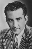
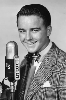

Country:United States, 68 minutes
Spoken languages:
Genres:Comedy, Crime, Mystery
Director(s):William Clemens
Writer(s):Kenneth Gamet, Edward Stratemeyer
Video Codec:Unknown
Number: 1740


Certification:NR
Storyline:
While participating in a contest at a local newspaper in which school children are asked to submit a news story, local attorney Carson Drew's daughter Nancy intercepts a real story assignment. She "covers" the inquest of the death of a woman who was poisoned. Nancy doesn't think the young woman accused of the crime is guilty and corrals her neighbor Ted into searching for a vital piece of evidence and stumbles onto the identity of the real killer.
Cast:  
Medium: Original DVD,
Comments: Part of: Mystery Classics - 50 Movie Pack
Loaned: No
Aspect ratio: Unknown